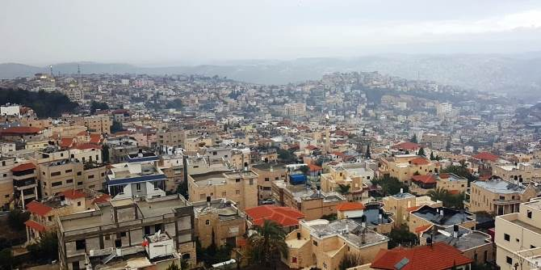
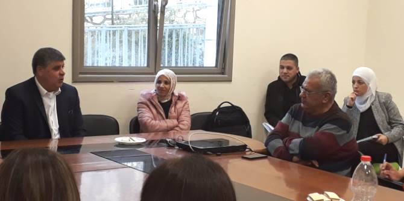

עמיתי מחזור א' של תוכנית מנדל למנהיגות בשירות הציבורי יצאו לסיור באום אל-פחםבתחילת הסיור ביקרו העמיתים וחברי הסגל של התוכנית ב"גלריה לאמנות אום אל-פחם" – גלריה לאמנות ערבית עכשווית שהוקמה ב-1996 ביוזמת האמן סעיד אבו שקרה. אחר כך שוחחו העמיתים עם הסוציולוג
פרופ' ח'אלד אבו עסבה על החברה הערבית כחברה במשבר ושינוי. פרופ' אבו עסבה הסביר כי הדפוסים החברתיים והתרבותיים שהתקיימו במשך דורות רבים חדלים מלהתקיים, דבר המאפשר לחברה הערבית השתלבות כלכלית וחברתית במדינה. לדבריו, אחד השינויים המרכזיים הוא מקום האישה בחברה הערבית, שהולך ונעשה דומיננטי: נשים רבות רוכשות השכלה גבוהה ומצליחות להשתלב בתפקידי מפתח. לצד האופטימיות והשינויים החיוביים, פרופ' אבו עסבה הסביר כי ישנם משברים בחיי המשפחה והתא המשפחתי: החינוך הציבורי הערבי נשחק לטובת שגשוג החינוך הפרטי; המדיניות הממשלתית בנוגע לחינוך בחברה הערבית נקבעת ללא היוועצות עם החברה; וצעירים ערבים שעובדים בהייטק עוזבים את הכפר ולא משקיעים בחיים בו. הפתרונות האפשריים שהוצגו כללו חיזוק החברה האזרחית כדי שתהיה מוכוונת לעשייה בתוך החברה ולמענה, שינוי התרבות הארגונית בשלטון המקומי והגברת המעורבות הממשלתית.

לאחר מכן נפגשו העמיתים עם אורי קנדל, מנכ"ל "דרכים שלובות", שהציג את פעילות העמותה – מלכ"ר יהודי-ערבי שמפעיל סיורים להכרת החברה הערבית ביישובים ערביים באזורים שונים בישראל. באמצעות הסיורים, העמותה שואפת לחשוף את קהל המטיילים להיסטוריה של החברה הערבית ולאתגרים הניצבים בפניה היום, לצד היכרות עם הגיוון והעושר התרבותי שבה.
בעיריית אום אל-פחם נפגשו העמיתים עם ראש העיר, ד"ר סמיר מחאמיד, שהחליט לעזוב את מערכת החינוך והצטרף לפוליטיקה. ד"ר מחאמיד הציג את הקשיים שעמם הוא מתמודד כראש עיר: מיגור האלימות, בעיות תחבורה, שדרוג החינוך, תדמית העיר ועוד, הן ברמה הלאומית (ביורוקרטיה, תקציבים) והן ברמה המקומית. כמו כן הצביע ד"ר מחאמיד על כוחן המסורתי של החמולות כחסם בפני שינוי.
בתום המפגש שוחחו חברי הקבוצה על מה שחוו במהלך היום: תדמית של מקום לעומת מה שקורה בו בפועל, אי-ההיכרות עם חברה שונה, הנטייה האנושית להכללות, הפחד מהלא מוכר והעובדה שאנו ניזונים מהתקשורת, הבוחרת להציג רק את הקצוות.
{kind=link}
{kind=link}